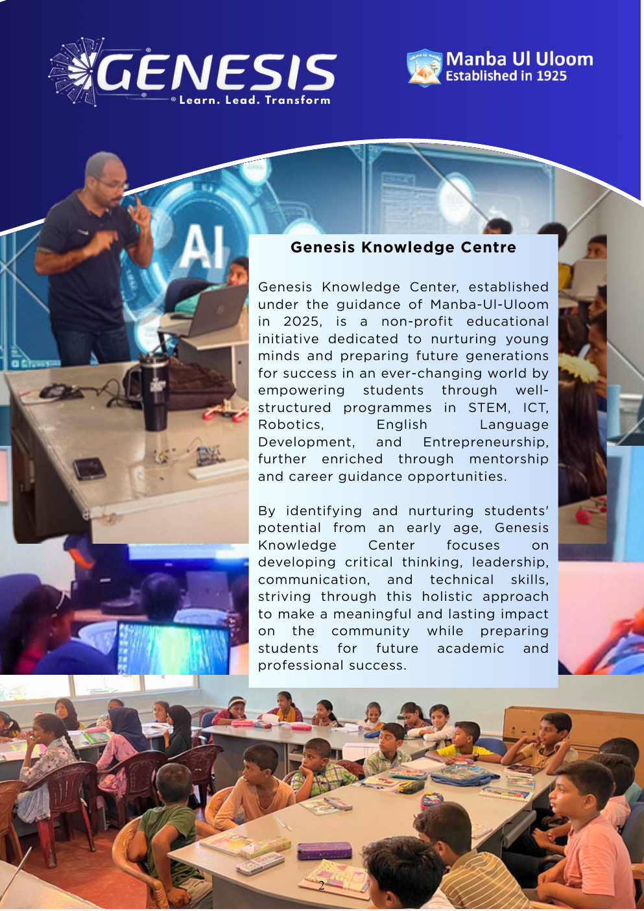

To nurture confident, creative and future-ready learners.
We aim to help students discover their potential and grow into capable contributors to the future.
Building knowledge, confidence and future-ready skills through practical and technology-focused education.

Genesis Knowledge Centre, established under the guidance of Manba-Ul-Uloom in 2025, is a non-profit educational initiative dedicated to nurturing young minds and preparing future generations for success in an ever-changing world.
Our programmes span STEM, ICT, Robotics, English Language Development and Entrepreneurship, enriched through mentorship and career guidance.
We aim to help students discover their potential and grow into capable contributors to the future.
We combine knowledge, practical technology experiences, character development and career readiness.
Every lesson combines understanding, practice and confidence-building.
Concepts are taught through simple theory and hands-on activities.
Quizzes, competitions and engaging activities make learning enjoyable.
English development supports academic improvement and confidence.
Interactive materials, self-learning guides, book borrowing and learning spaces.
The educational foundation was formalised through the Muslim Religious Charitable Foundation, Mathurasathul Manba-Ul-Uloom.
Genesis Knowledge Centre was established under the guidance of Manba-Ul-Uloom as a non-profit educational initiative.
The Academy celebrated the successful completion of its first batch with a certificate awarding ceremony.
Continuing to expand opportunities in technology, STEM, robotics, career guidance and industry collaboration.
Discover the programmes and learning opportunities available for every stage.
Explore Our Programs →